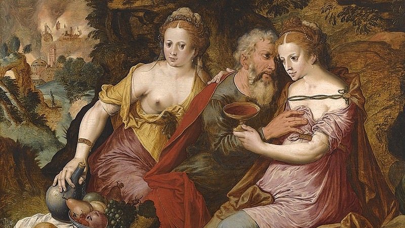
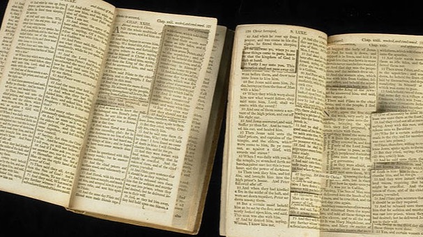

How to Earn Your Certificate
1. Watch Recordings
Engage with the expert video lectures for each individual course in the pathway.
2. Read Homework
Complete all assigned readings to deepen your contextual understanding.
3. Take Quizzes
Test your knowledge and retention with brief quizzes after key modules.
4. Final Assignment
Complete the final written assignment for each course to demonstrate mastery.
Certificate Capstone Requirement
After completing the individual requirements for all courses in a pathway, you must submit a final cumulative essay and pass a live oral examination on Zoom with our faculty to officially earn your certificate.
Our Available Certificate Pathways
Certificate Track 1
Theological Foundations
4 Classes • 3.2 CEUs


Ready to Earn Your 3.2 CEUs?
Start your free trial today and get immediate access to the entire 4-course journey.
Start Free Trial & Earn Certificate